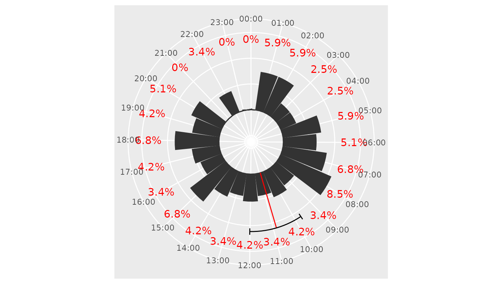

Plot a 24-hour rose diagram of daily activity
mm_plot_rose_diagram.RdThis function generates a rose diagram (circular bar plot) to visualize daily activity patterns over a 24-hour period. Each bar represents either the absolute or relative frequency of observations within hourly intervals. The plot also includes a segment indicating the mean activity time, and an optional segment showing the 95% confidence interval of the activity period.
Usage
mm_plot_rose_diagram(
data = NULL,
times,
frequencies = "absolute",
hide_lebels = FALSE,
label_position = NULL,
label_style = list(),
time_range = 1,
ci_segment = TRUE,
mean_segment = TRUE,
ring = TRUE,
color = "gray20",
fill = color,
ci_style = list(),
mean_style = list(),
start = -0.12,
width = NULL
)Arguments
- data
A data frame containing the time values. If
NULL,timesmust be provided as a vector.- times
A numeric vector of time values (in radians) or a column name from
data.- frequencies
Character. Use
"absolute"to show counts or"relative"to show percentages. Default is"absolute".- hide_lebels
Logical. If
TRUE, frequency value labels on top of bars are hidden. Default isFALSE.- label_position
Numeric. Controls vertical position of the frequency value labels (if shown).
- label_style
A list of styles for labels. Accepts
color,size, andfamily.- time_range
Numeric. Width of the time bins in hours. Default is
1(hourly bins).- ci_segment
Logical or numeric. If
TRUE, a segment representing the 95% confidence interval is added. If numeric, this value sets the length of the CI ticks. Default isTRUE.- mean_segment
Logical. If
TRUE, a segment representing the mean time is added. Default isTRUE.- ring
Logical or numeric vector. If
TRUE, a default ring range is set. If a numeric vector of length 2 is provided, sets custom inner and outer limits of the radial axis.- color
Color of the bar border and segments. Default is
"gray20".- fill
Fill color of the bars. Default is the same as
color.- ci_style
A list of styles for the confidence interval segment. Accepts
color,linetype, andlinewidth.- mean_style
A list of styles for the mean segment. Accepts
color,linetype, andlinewidth.- start
Numeric. The angle (in radians) where the polar plot starts. Default is
-0.12.- width
Numeric. Width of each bar. Default is
NULL, which uses the default width fromgeom_col().
Examples
set.seed(129)
library(dplyr)
library(ggplot2)
rf <- runif(123, 0, max = 6)
mm_plot_rose_diagram(data = NULL,
times = rf,
frequencies = "relative",
label_style = list(size = 4, color = 'red'),
label_position = 11,
time_range = 1,
mean_segment = TRUE,
ci_segment = 1,
ring = c(-5, 12),
color = 'gray20',
mean_style = list(linetype = 1, linewidth = .5, color = 'red'),
ci_style = list(linetype = 1, linewidth = .5, color = 'black')
)
